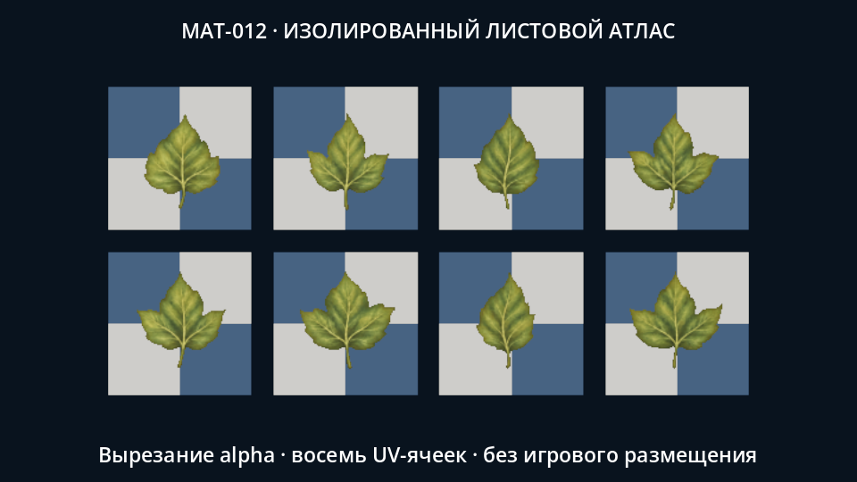
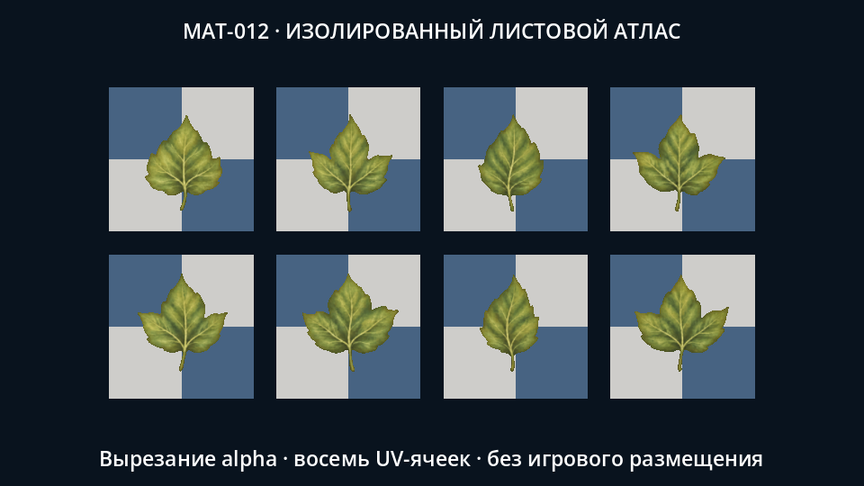
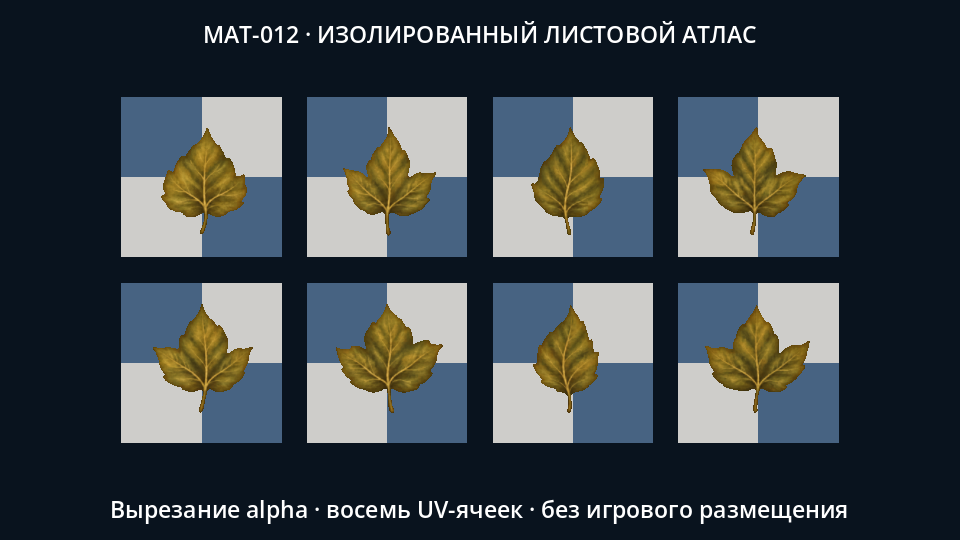
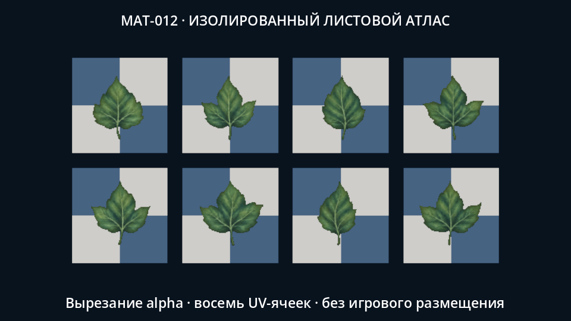
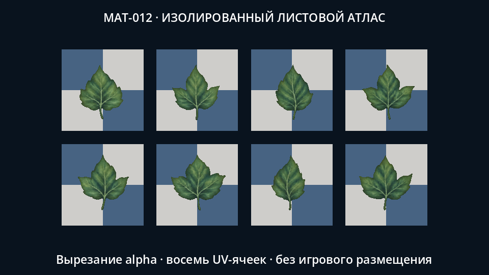
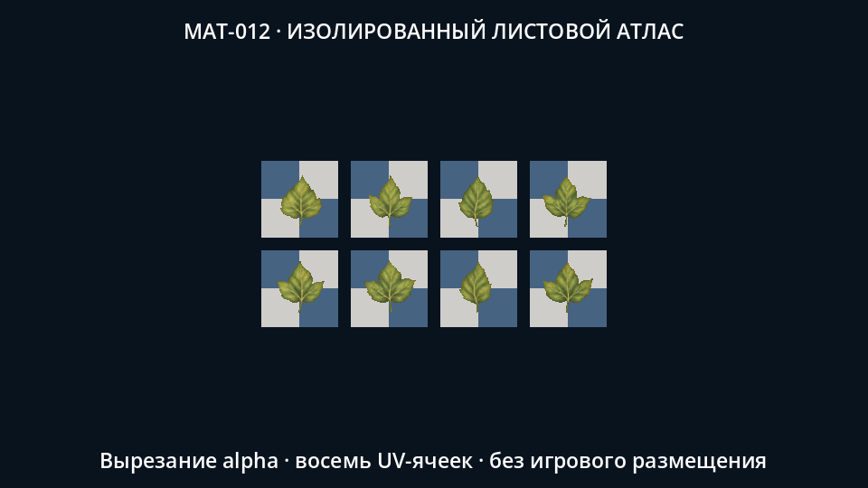

Восемь исходных листьев, общий cutout-материал и настоящие native-кадры. Шахматные подложки — проверка прозрачности. Игровые растительные объекты, размещение, UV-плотность и проверки движения остаются открытыми. PARTIAL.





